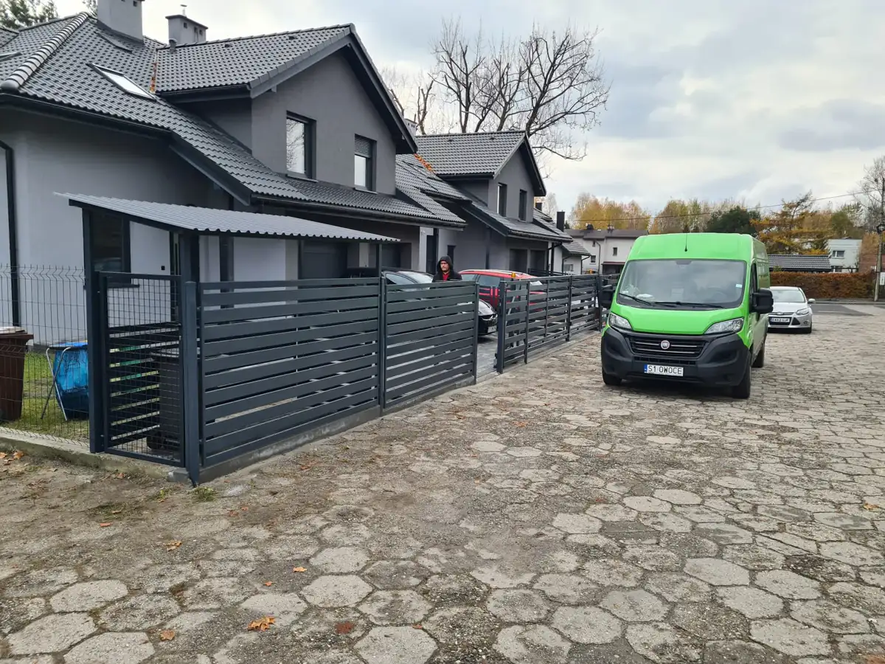

Wyślij wiadomość
Opisz planowany zakres i dołącz zdjęcia miejsca realizacji.
Facebook ↗
Kontakt
Wyślij zdjęcie miejsca montażu i krótko opisz, czego potrzebujesz. To najlepszy początek konkretnej wyceny.
Bezpłatna wycena
Najwygodniej skontaktować się przez Facebooka. Możesz od razu przesłać zdjęcia wjazdu, ogrodzenia lub miejsca planowanego montażu.
Napisz na Facebooku ↗
Opisz planowany zakres i dołącz zdjęcia miejsca realizacji.
Facebook ↗Omówimy rodzaj bramy, wzór, automatykę i potrzebne elementy.
Zobacz ofertę ↗Zakres i cena są ustalane indywidualnie dla konkretnej posesji.
Zobacz realizacje ↗Najczęstsze pytania
Krótko o tym, jak wygląda przygotowanie realizacji.
Tak. Cena zależy między innymi od wymiarów, konstrukcji, wzoru, wykończenia oraz zakresu montażu.
Tak. Spójny zestaw bramy, furtki i przęseł pozwala uzyskać najlepszy efekt wizualny.
Tak. Automatykę można uwzględnić w nowej realizacji i dopasować do rodzaju bramy.
Najbardziej pomagają zdjęcia całego wjazdu, przybliżone wymiary i krótki opis oczekiwanego zakresu.